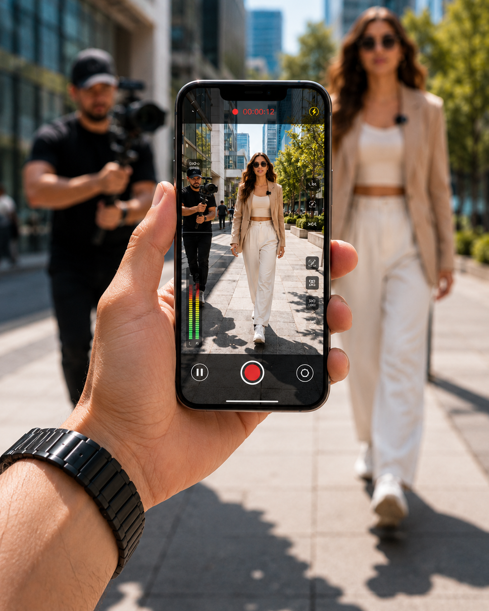
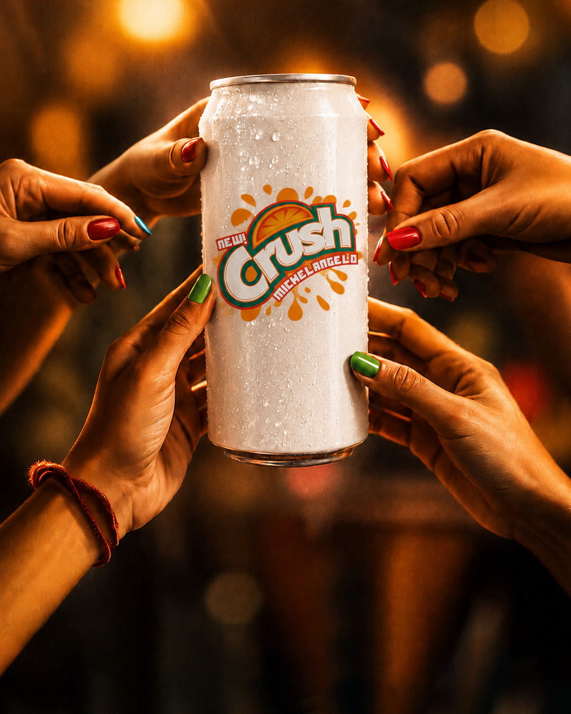

Video Production Company in Trichy for Corporate Films, Commercials, and High-Retention Brand Videos
When a prospective customer, procurement team, or investor visits your website or scrolls past your social feed, static text and stock graphics rarely tell the full story. A well-planned video shows how your product works, introduces the people behind your business, and demonstrates real operational capability in seconds.
As a digital-marketing-led video production company in Trichy, RiverBird plans, scripts, films, and edits business videos designed around clear commercial objectives. Operating from our office in Melachinthamani, Tiruchirappalli, our in-house creative and production team handles the entire pipeline—from initial concept development and storyboarding to on-location shooting, colour grading, 2D motion graphics, and multi-platform export—so your brand gets broadcast- and social-ready video assets without coordinating multiple vendors.
Why Businesses Need Marketing-First Video Production
Many businesses commission a video shoot only to end up with a visually pleasant file that doesn't generate enquiries, explain the offer clearly, or fit the platforms where their customers actually spend time. Hiring a traditional event videographer or a standalone editing vendor often leaves a gap between what is filmed and how that footage performs in a sales or marketing funnel.
At RiverBird, video production sits directly alongside our digital marketing and growth channels. Before we write a script or set up a camera, we define:
The Primary Business Goal
Whether the video is meant to build executive and institutional credibility on your website, demonstrate a physical or software product, capture attention in the first three seconds of a paid ad, or educate prospects on YouTube.
The Viewer's Decision Stage
Matching the tone, runtime, and call to action to cold audiences discovering your brand for the first time versus warm prospects comparing providers.
Multi-Channel Adaptability
Planning camera framing and shot lists upfront so a single production schedule yields a widescreen master film for your website alongside vertical cut-downs for Instagram Reels, YouTube Shorts, and paid social campaigns.
Video Content That Powers Your Marketing and Drives Results
We create marketing-focused videos that help brands attract attention, generate leads, build trust, and grow across every digital channel.
Broadcast & Social-Ready Assets
From high-end 4K commercial shoots to rapid-turnaround social Reels, we engineer video assets tailored to your business funnel.
4K & Full HD Capture
Crisp cinema-grade footage filmed on modern sensors with prime optics.
High-Retention Editing
Pacing, graphics, and sound design tuned for peak viewer retention.

Product Demonstration Videos
Studio lighting, macro angles, and hands-on demonstrations highlighting product quality.

Corporate Films & Brand Stories
Executive storytelling, facility walk-throughs, and institutional capability showcases.

Instagram Reels & YouTube Shorts
Punchy, vertical short-form content designed to capture attention in the first three seconds.

Commercial Ad Campaigns
Performance video ads built with hook variations for high return on ad spend.
Video Production Services Built for Modern Digital Platforms
We provide end-to-end video production services in Trichy tailored to B2B enterprises, retail and e-commerce brands, educational institutions, healthcare providers, hospitality businesses, and growing startups across Tamil Nadu and international markets.
1. Corporate Video Production in Trichy (Company Profiles & Brand Films)
Your corporate film is often the first detailed look a client, partner, or job applicant gets into your organisation. Our corporate video production in Trichy focuses on clear, credible business storytelling rather than generic corporate clichés. We produce:
- Company Profile & Brand Story Films: Structured 2-to-5-minute films introducing your mission, leadership, workplace culture, and service standards for your About page, investor decks, and LinkedIn profile.
- Facility, Plant & Campus Walkthroughs: On-location filming across offices, manufacturing units, showrooms, educational campuses, and clinics to show real infrastructure and operational proof.
- Internal Communication & Training Videos: Clear instructional and onboarding videos that help organisations standardise processes across teams.
2. Promotional Video Production & Commercial Campaigns
When launching a seasonal offer, opening a new branch, or running performance campaigns, your video needs an immediate visual hook, clear value proposition, and a friction-free call to action. Our promotional video production in Trichy covers:
- Digital Commercials & Ad Creatives: High-conversion video ads engineered specifically for Google, YouTube, and Meta advertising campaigns, complete with hook variations for split testing.
- Retail, Showroom & Hospitality Promos: Dynamic walk-throughs and highlight reels for restaurants, jewellery showrooms, lifestyle stores, and fitness centres.
- Offer & Festival Campaign Videos: Timely promotional videos for regional Tamil Nadu festivals (Pongal, Deepavali, New Year) and annual sales drives.
3. Product Demonstration & E-Commerce Video Production
For consumer goods, industrial equipment, or software, buyers want to see the product in use before committing. Videos that explain functionality reduce return rates and answer buyer objections upfront. We deliver:
- Physical Product Feature & Unboxing Videos: Detailed studio lighting, macro angles, and hands-on demonstrations highlighting material quality, craftsmanship, and key functions.
- Software & App Screencast Demos: High-definition interface walkthroughs, user-flow recordings, and feature explainers for tech products and SaaS tools.
- 360-Degree & Studio Product Shoots: Clean white-background or stylized lifestyle product videos ready for Amazon, Shopify, or website product pages.
4. Social Media Reels, YouTube Shorts & High-Retention Short-Form Content
Short-form video is now the primary organic growth driver on Instagram, YouTube, and LinkedIn. However, simply repurposing long landscape footage into a vertical crop rarely works. We produce platform-native vertical video (9:16) built with:
- Founder & Leadership Talking-Head Videos: Polished executive insights, industry commentary, and educational tips shot with cinema lenses, professional lighting, and studio audio.
- Behind-the-Scenes & Craftsmanship Reels: High-retention clips showing how your team works, how raw materials turn into finished goods, and how orders are dispatched.
- Viral Trends & Trend-Adapted Shorts: Fast-turnaround Reels adapting trending audio formats into brand-relevant messaging without sacrificing professionalism.
5. Customer Testimonials, Case Studies & Social Proof Videos
Prospects in the consideration stage want to know how you solved real problems for people like them. Authentic customer interview videos build deeper trust than written reviews. We handle:
- Client Video Testimonials: Structured, relaxed interviews where real buyers share their challenge, their experience working with you, and measurable outcomes.
- B2B Case Study Mini-Documentaries: Professional project reviews featuring client stakeholders alongside your project leads on site.
- Patient, Student & Customer Success Stories: Empathetic, credible video features for healthcare, medical clinics, schools, and professional coaching institutes.
6. 2D Motion Graphics, Explainer Videos & Event Coverage
When live shooting is impractical or concepts involve complex data, 2D motion graphics provide a visually engaging alternative. We offer:
- 2D Animated Explainer Videos: Custom-illustrated and animated videos simplifying complex workflows, financial products, software, or technical services.
- Corporate Event, Conference & Expo Coverage: Professional multi-camera documentation of annual meetings, inaugurations, exhibitions, and award ceremonies.
- Executive Interviews & Panel Recordings: Broadcast-grade lighting, multi-track audio, and multicam setups for seminars, fireside chats, and podcasts.
Choosing the Right Video Format for Your Business
Selecting the appropriate video format ensures your production budget aligns with your actual audience touchpoints and conversion objectives.
| Format | Best Used For | Typical Length | Key Platforms |
|---|---|---|---|
| Corporate Brand Film | Company profile, About page, investor presentations | 2–5 minutes | Website, YouTube, LinkedIn |
| Promotional Ad / Commercial | Paid Meta & Google ads, campaign launches, offers | 15–45 seconds | Instagram, Facebook, YouTube Ads |
| Product Demo / Explainer | E-commerce PDPs, SaaS onboarding, feature breakdowns | 60–90 seconds | Website, YouTube, Marketplace |
| Social Media Reels / Shorts | Daily organic brand awareness, community building | 15–60 seconds | Instagram Reels, YouTube Shorts |
| Customer Testimonial | Bottom-of-funnel conversion, proposal attachments | 60–120 seconds | Landing pages, WhatsApp, Sales deck |
| Event Coverage / Expo | Milestone documentation, recaps, executive PR | 1–3 minutes | LinkedIn, YouTube, Corporate PR |
Our Script-to-Screen Production Pipeline
Producing high-impact video requires rigorous pre-production planning so filming days are efficient and post-production runs smoothly.
Stage 1: Discovery, Creative Concept & Commercial Strategy
We consult with your team to clarify the primary objective, target audience, budget, publishing channels, and key messaging pillars before scoping production requirements.
Stage 2: Scriptwriting & Visual Storyboarding
Our copywriters prepare scene-by-scene scripts, interview question guides, visual shot lists, and storyboards. We review tone, timing, and brand voice with your stakeholders before cameras roll.
Stage 3: On-Location & Studio Production (Filming)
Our camera crew, directors, gaffers, and sound engineers arrive on site in Trichy or across Tamil Nadu. We manage multi-camera lighting, wireless audio, drone aerials (where compliant), and on-camera talent guidance.
Stage 4: Post-Production, Colour Grading & Motion Graphics
Footage moves to our post-production suite for assembly editing, pacing adjustment, cinematic colour grading, dialogue mastering, sound design, licensed background scoring, and 2D animated text/lower-thirds.
Stage 5: Multi-Platform Formatting, Revisions & Final Handover
We share review drafts via timestamped review links. Once revisions are approved, we export master files in 4K/Full HD across widescreen (16:9), vertical (9:16), and square (1:1) formats ready for deployment.
Technical Specifications and Standards
Every commercial video produced by RiverBird adheres to professional broadcast and digital streaming standards:
- Resolution & Bitrate: Native 4K UHD (3840×2160) and Full HD (1920×1080) master exports at high bitrates for crisp projection and web playback.
- Camera Packages: Modern full-frame cinema and mirrorless sensors equipped with cinema primes, macro lenses, and optical stabilization.
- Lighting & Grip: High-CRI LED panel setups, softboxes, spot accents, and 3-axis motorized gimbals for fluid cinematic motion.
- Audio Engineering: Dual-channel wireless lavaliers, directional boom microphones, and clean audio mastering free of hum, reverb, or distortion.
- Colour Grading: Professional colour grading in DaVinci Resolve ensuring accurate skin tones and true-to-life product colours.
- Multi-Format Exports: Formatted masters for 16:9 widescreen, 9:16 vertical, 1:1 square, and 4:5 feed formats with embedded captions.
What Determines the Cost of Video Production?
Because every commercial project has distinct requirements, video production is scoped individually based on:
- Video Format & Runtime: A 30-second social ad creative requires different resources than a multi-chapter 5-minute corporate film.
- Shoot Duration & Locations: Single-day on-site filming in Trichy versus multi-day shoots spanning several factories or regional branches.
- Animation & Post-Production Complexity: Standard live-action editing takes less production time than custom 2D animated explainers or complex visual effects.
- Talent, Voiceover & Styling Requirements: Whether company staff appear on camera or project needs professional presenters, models, or multilingual voiceover artists.
Want an accurate INR estimate? Share your objective, preferred video format, and target timeline via our contact page, and we will prepare a clear scope and quotation within one business day.
Why Partner with RiverBird for Video Production in Trichy?
Marketing Strategy & Production Under One Roof
Unlike standalone studios that hand over a video file and step away, RiverBird connects your video production directly with SEO, Social Media Marketing, Paid Ads (Meta & Google), Influencer Marketing, and Lead Generation Systems. Every video is built to perform inside a wider growth strategy.
Accessible Local Team in Trichy
Led by Founder Juliusteyn (Julius Jerome) and Co-Founder & CEO Edwinjoyal, RiverBird Digital Solutions Pvt. Ltd. operates from our office on Karur Bypass Road in Melachinthamani, Tiruchirappalli. You can meet our creative team in person and coordinate on-site filming across Trichy and Tamil Nadu without paying out-of-station travel markups.
Cross-Industry Brand Experience
RiverBird has supported more than 50 brands across India and international markets (including the United States, Canada, the UAE, and Malaysia)—partnering with businesses across food and hospitality (Peak Food Court, Fruitbell Icecreams, Aha Restaurant, Agarwal Restaurant), retail and fashion (Manjal Couture, Sathya Plywoods, Cobra Steel Door, Linen World), education and healthcare (Shanas Institute, SSIMS), fitness (Halofit Fitness, Gym Nation Fitness), and enterprise/commerce (Classic Gypsum, Fashyfi, Olivia Marketers).
Frequently Asked Questions About Video Production
We manage the complete video production pipeline in-house—including concept development, scriptwriting, storyboarding, location scouting, on-site filming, and full post-production (colour grading, 2D motion graphics, audio mixing, and captions). If you already have usable raw footage recorded on a camera or smartphone, you can also engage our team specifically for post-production editing and platform formatting.
We deliver finished videos in 4K (3840×2160) and Full HD (1920×1080) as standard. Exports are provided in H.264/MP4 (and Apple ProRes when requested) and formatted to match your publishing channels: 16:9 for YouTube and websites, 9:16 for Instagram Reels and YouTube Shorts, 1:1 for square feed posts, and 4:5 for vertical social feeds and paid ads.
Turnaround time depends on the format and production scope. A short-form social media Reel typically takes 5 to 7 business days from brief to delivery, while a full corporate brand film involving multiple shooting days and interviews generally takes 3 to 4 weeks end-to-end. For custom explainer animations or multi-location campaigns, we provide a milestone schedule during the kickoff meeting.
All proposals for Indian businesses are quoted in Indian Rupees (INR, ₹), with applicable GST details clearly stated. Because costs vary based on shoot days, locations, video length, motion graphics, voiceover needs, and the number of aspect-ratio cut-downs, we scope each project individually. Share your goals, preferred format, and timeline with our team, and we will respond within one business day with a tailored roadmap and estimate.
Yes. Our production team is based in Melachinthamani, Tiruchirappalli, and conducts on-location shoots at corporate offices, retail showrooms, restaurants, campuses, and industrial or manufacturing facilities across Trichy and Tamil Nadu. During pre-production, we coordinate shooting windows, lighting and audio requirements, and site permissions with your team so filming runs smoothly around your workday.
Ready to Plan Your Next Video Project in Trichy?
Whether you need a flagship corporate brand film, a high-converting promotional video ad, a product launch showcase, or consistent Reels and Shorts for your social channels, our team in Tiruchirappalli is ready to help you plan and produce it from script to screen.